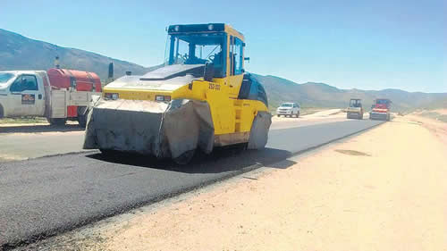

Real Chubut - Agencia de Noticias


Las claves del presupuesto

El Gobierno proyecta una reducción nominal de 7 puntos en las partidas para obra pública, da por caído los PPP, echará mano a los fondos del FGS para pagar a jubilados, avanzará con privatizaciones y seguirá aumentando las tarifas.
El Gobierno anticipa ahora que la luz al final del túnel llegará en el segundo trimestre del próximo año, gracias a un incremento de las exportaciones agropecuarias. La recesión se extendería entonces hasta marzo de 2019 y luego la actividad iniciaría una recuperación, según explicaron ayer fuentes del Palacio de Hacienda, pese a que anticipan que el contexto externo continuará siendo negativo y que no esperan el empujón de la obra en infraestructura vía contratos de Participación Público Privada (PPP), modalidad a la que “ya no apostamos ni una ficha”, según dijeron. El fondo de garantía de sustentabilidad, stock de respaldo de los aportes para los jubilados, comenzará a usarse a partir de abril próximo para el pago de los haberes previsionales, dado que para ese mes se habrán consumido los ingresos provenientes del blanqueo de capitales. Como el Banco Central tiene prohibido por el acuerdo con el Fondo Monetario financiar al Tesoro, será el Banco Nación el que aporte el año próximo 15.000 millones de pesos de sus utilidades. También se congelará el fondo de incentivo docente a las provincias en términos nominales, con el objetivo de que la inflación lo vaya licuando con el tiempo.
Desde el equipo de Hacienda reconocen que hubo una enorme diferencia entre la previsión de variables del presupuesto de este año y lo que terminó sucediendo. Sin embargo, lo reducen a cuestiones externas e imponderables: sequía, volatilidad financiera externa, la crisis turca, la suba de tasas de interés de Estados Unidos y recientemente los problemas en Brasil. Nada de esto está previsto que vaya a cambiar pero esta vez aseguran que una buena cosecha alcanzará para compensar todos esos problemas. “El contexto externo desfavorable se va a mantener, pero la apuesta es a una mejora en la cosecha. El agro va a traccionar”, se esperanzan en Hacienda. También esperan que el consumo mejore en términos interanuales recién en el último trimestre del año próximo, cerca de la elecciones presidenciales, en torno a 15 por ciento contra 2018. De todos modos, en el balance anual el consumo privado se proyecta con una contracción del 1,6 por ciento.
- Dólar e inflación. El tipo de cambio promedio para el año próximo es de 40,10 pesos por dólar, un nivel incluso inferior al valor diario actual de 40,42 pesos. Los funcionarios lo comparan con un promedio de entre 28-30 pesos para 2018. La inflación, en tanto, se ubicaría punta a punta en 23 por ciento en 2019, contra un 42 por ciento proyectado para este año. Los funcionarios de Cambiemos consideran que el dólar está lo suficientemente alto en materia de competitividad. “Si subiese 10 por ciento más a 44 pesos, se ubicaría en niveles de competitividad de 2003”, señalaron. Aunque la depreciación del tipo de cambio y la suba de precios, reconocen, es funcional con la meta de resultado primario.
- Obra pública. El gasto en obra pública a nivel general se va a reducir en un 7 por ciento en términos nominales respecto de este año, lo que implica una caída de al menos el 30 por ciento real teniendo en cuenta la inflación estimada para 2019. Dentro de este recorte, las obras en infraestructura para el área de Educación se mantendrán sin cambios nominales (0 por ciento), que implica una caída real del 23 por ciento. La apuesta es trasladar esa responsabilidad a las provincias. “Ya no hay fichas para los PPP”, aseguran. De hecho, en el mensaje del Presupuesto se reconoce la dificultad de la realización de obra pública y proyectos de participación público privada, pero adjudica esa situación a “la causa de los cuadernos”.
- Fondo de Jubilados. El artículo 117 del proyecto de Presupuesto sostiene que, “a los fines presupuestarios, los recursos del FGS destinados al pago del Programa Nacional de Reparación Histórica para Jubilados y Pensionados, serán registrados como un recurso de capital de la Anses”. Según explicaron en Hacienda, en abril está estimado que se acabarán los fondos extraordinarios provenientes del blanqueo con el cual se comprometió el pago de una mejora marginal en las jubilaciones. Luego de que se terminen esos fondos, los haberes se pagarán con el FGS, que se trata de un stock y no un flujo, lo que implica que se irá reduciendo ese capital garantizado.
- Otros Fondos. Como ingresos a la arcas del Estado se prevé que el Tesoro vuelva a tomar parte de las utilidades del Banco Nación. Para el año próximo serán 15.000 millones de pesos. También estará el dinero proveniente de las privatizaciones de las centrales eléctricas Ensenada de Barragán y Brigadier López propiedad de Enarsa. En el fondo de incentivo docente no habrá modificaciones presupuestarias. “Es un desembolso que creemos como Nación que no hay que pagar y que las provincias coinciden en que así sea”, afirmaron en Hacienda. El objetivo es que se vaya licuando con la inflación de próximos períodos.
- Más impuestos. Para evitar desfinanciarse aún más, el Gobierno dejará en suspenso una serie de modificaciones tributarias que había impulsado hasta el año pasado. No aumentarán el porcentaje del Impuesto al Cheque que se puede deducir de Ganancias, el cual estaba previsto que pasara de 33 por ciento actual al 50 por ciento. Tampoco se elimina el impuesto a los Sellos por parte de las provincias. En cambio, el gobierno nacional mantiene el reclamo a las provincias, firmado en el Pacto Fiscal, para que continúen con la reducción de Ingresos Brutos. Con un nivel de precios internos para este año de al menos el 42 por ciento, no se permitirá el año próximo el ajuste de los balances por inflación. Se pausa la reducción en Bienes Personales y en el caso de Ganancias, se eliminan las exenciones para personas jurídicas, funcionarios y mutuales y cooperativas. Estas últimas habían logrado escapar del impuesto el año pasado por considerarse que una cooperativa no tiene ganancia. El cambio anticipa otra vez un fuerte conflicto con el sector. Con esas medidas el Gobierno espera una recaudación adicional en Ganancias de 25.000 millones de pesos, mitad percibido entre Nación y provincias.
- Tarifas. Si bien en el proyecto de Presupuesto se asegura que las tarifas de los servicios se ajustarán por debajo de la inflación, en el caso de la energía eléctrica en Hacienda anticipan un ajuste de 30 por ciento entre enero y febrero “como recomposición de este año”. Luego comenzaría a subir de acuerdo con la pauta inflacionaria. Para el gas confirmaron un 30 por ciento en octubre y luego se ajustaría con la inflación.
Fuente: Pagina12